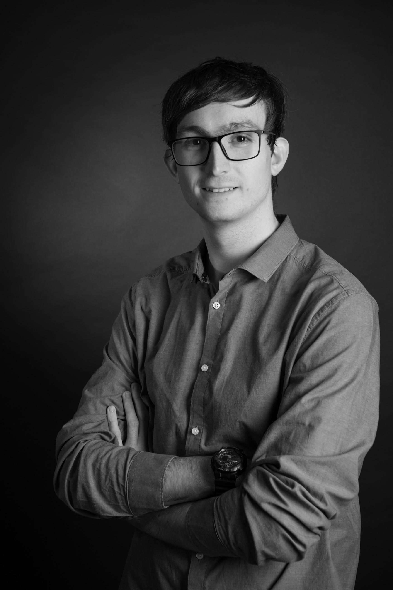

Level Designer / Technical Level Designer junior, avec un background en développement logiciel

Qui suis-je
J'ai toujours été intéressé par l'aspect créatif derrière les jeux vidéo, et ceux proposant un éditeur de niveaux ou un mode bac à sable ont grandement contribué à l'expression de ma créativité.
Dès l’enfance, je passais déjà beaucoup de temps à imaginer des labyrinthes, puis j’ai découvert Trackmania à l’école primaire, où j’ai commencé à créer mes premiers circuits.
Cette pratique s'est ensuite développée avec des jeux comme Minecraft, Portal 2, Mario Maker 2, et les versions ultérieures de Trackmania.
À force de centaines de niveaux cumulés avec le temps, j'ai pu progressivement développer une vraie sensibilité au flow, à la lisibilité, à la difficulté et à l'expérience joueur grâce à cette passion.
Sur le dernier opus de Trackmania, cette expérience m'a notamment permis de me démarquer en tant que "mappeur" pour de nombreuses compétitions à plus ou moins grandes échelles, jusqu'à me donner la chance de rejoindre l'association Springs E-Sport en Septembre 2025 afin de pousser ce rôle encore plus loin en participant à l'organisation d'évènements plus structurés et touchant un plus large public.
En parallèle, j’ai rejoint en 2024 l’équipe du jeu mobile de quiz Devineuf, découvert avec des amis, afin de contribuer à l’enrichissement de sa base de données de questions et de proposer des pistes d’amélioration pour l’expérience joueur.
Côté professionnel, ayant suivi une formation dans l'informatique, j'ai d'abord travaillé 2 ans en tant que développeur Python, d'abord chez Faceel-it en 2022, puis chez Alten en 2023.
Cette expérience m’a apporté une base technique solide, utile pour comprendre les contraintes de production, les outils et les logiques d’intégration, tout en me permettant d'apprendre à travailler en équipe.
Chez Alten, j’ai ensuite eu l’opportunité de participer au projet de jeu thérapeutique "Le Royaume d’Ailm", porté par l’association Burns & Smiles, pour lequel j’ai pu contribuer à la conceptualisation du jeu, à certains choix de game design, puis au level design des cartes de l’aventure sous Unreal Engine 5.
Un bilan de compétences réalisé en 2024 m’a enfin permis de confirmer que le level design correspondait pleinement à mes intérêts, à mes compétences et à ma manière d’aborder la création : concevoir des expériences de jeu lisibles, cohérentes et engageantes, en tenant compte à la fois du joueur et des contraintes techniques.
Mes Compétences
🔨 Hard Skills
🎮 Orientés Jeu vidéo
- Unreal Engine 5 (Mapping, Blueprints) | ⭐⭐⭐☆☆
- Tiled | ⭐⭐⭐☆☆
- Blender | ⭐☆☆☆☆
- Pixel art | ⭐⭐☆☆☆
━━━━━━━━━━━━━━━━━━━━━━━━━━━━━
💻 Orientés dev
- Programmation orientée objet | ⭐⭐⭐⭐☆
- Python | ⭐⭐⭐⭐☆
- Manipulation de données (xml, regex) | ⭐⭐⭐☆☆
- Développement Web | ⭐⭐⭐☆☆
━━━━━━━━━━━━━━━━━━━━━━━━━━━━━
⚙️ Compétences Générales
- Anglais - TOEIC 820/990 | ⭐⭐⭐⭐☆
- Logiciels de Bureautique (Microsoft Excel/Word - Google Sheets/Docs) | ⭐⭐⭐⭐☆
- Méthodes Agiles (SCRUM / Kanban) | ⭐⭐⭐☆☆
- Versioning Git | ⭐⭐⭐⭐☆
- Jira | ⭐⭐⭐☆☆
━━━━━━━━━━━━━━━━━━━━━━━━━━━━━
🧠 Soft Skills
- Travail en équipe
- Autonomie
- Sens du détail
Mon Parcours
Game & Level Designer
Burns & Smiles, Alten | 2024 - 2026
Game designer puis Level designer pour le projet de jeu "Le Royaume d'Ailm"
Développeur DevOps Python
Centrale Auchan, Alten | 2023
Responsable d'applications de la production Auchan Retail France
Développeur Python
Luminess, Faceel-IT | 2021 - 2022
Participation au processus de conversion de brevets pour l’USPTO au format XML
Master IAGL
Université de Lille 1 | 2015 - 2021
Master informatique orienté génie logiciel
CV détaillé
Pour consulter mon parcours complet, mes expériences et mes compétences en détail, vous pouvez voir ou télécharger mon CV ci-dessous.